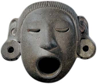
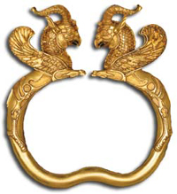
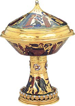
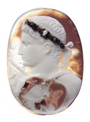
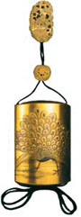
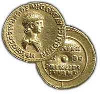

|
|
 Le collezioni del British Museum
Le collezioni del British Museum
|
|
Il
British Museum vanta quasi 100 gallerie. La selezione degli oggetti
esposti è semi-permanente. Non disponiamo di sufficiente spazio
per esporre tutto permanentemente e, soprattutto nel caso di stampe
e disegni, l'esposizione avviene solo per periodi limitati di tempo,
per via di esigenze di conservazione. Tuttavia, con oltre 50.000
oggetti esposti e con le principali opere sempre disponibili, a
meno che non vi siano esigenze di ricerche essenziali, conservazione
o prestito ad altri musei, siamo certi che si avrà solo l'imbarazzo
della scelta.
|
|
Africa
e Americhe
Con un totale di circa 350.000 oggetti, le collezioni etnografiche
rappresentano le culture di popolazioni indigene in tutto il mondo.
Queste collezioni hanno un significato sia contemporaneo che storico
e si concentrano su Africa, Asia, Medio Oriente, Europa orientale,
Oceania e le Americhe, comprese le magnifiche collezioni giunte
fino a noi dai viaggi del Capitano Cook e Vancouver nel XVII e XVIII
secolo alle coste del Pacifico e dell'America del nord-ovest. Fra
le collezioni attualmente esposte permanentemente ricordiamo: Africa
occidentale, Nord America e Messico.
Department of Ethnography
|
 |
Vicino
Oriente Antico
Le grandi collezioni del piano principale del Museo comprendono bassorilievi
di cerimonie di stato, scene di caccia e di guerra dai palazzi dei
re assiri di Nimrud, Khorsabad e Ninive. Le gallerie di Raymond e
Beverly Sackler, al piano superiore, contengono oggetti provenienti
da Iran, Anatolia, Mesopotamia e dal Levante, tra cui il Tesoro di
Oxus, il Cimitero Reale a Ur e reperti da Gerico.
Department of the Ancient Near East
|
 |
Asia
Il British Museum possiede le più ricche collezioni di antichità cinesi,
dipinti e porcellane d'Europa e la migliore collezione di ceramiche
islamiche al di fuori del mondo islamico. Le collezioni di sculture
dal sub-continente indiano sono le più rappresentative in assoluto
in occidente. Inoltre, un'ennesima attrazione è la nuova galleria
dedicata alla Corea.
Department of Oriental Antiquities
Korea
Foundation Gallery |
 |
Gran
Bretagna ed Europa
Le gallerie al piano superiore del Museo abbracciano le età del bronzo
e del ferro in Europa, la Gran Bretagna ai tempi di Roma e l'Europa
dal Medioevo all'età moderna. Le gallerie presentano anche reperti
artistici ed archeologici di talune altre culture cristiane ed ebraiche,
comprese le regioni dell'Anatolia e del Caucaso. Fra i tesori in mostra
si ricordano quelli di Mildenhall, Hoxne e Snettisham, il corredo
funerario della nave-sepolcro di Sutton Hoo e i pezzi degli scacchi
dall'isola di Lewis. Su questo piano si trova anche un campione rappresentativo
della collezione di orologi del Museo.
Department of Prehistory and Europe
|
 |
Egitto
Il Museo ospita una delle più importanti collezioni egizie dopo quella
del Cairo. Gli oggetti illustrano tutti gli aspetti della cultura
dell'antico Egitto, a partire dai tempi pre-dinastici (anno 4000 a.C.
circa), fino al periodo coptico (cristiano), attorno al XII secolo
d.C., e comprendono molti reperti da Nubia e Sudan. I principali oggetti
scultorei si trovano sul piano principale, mentre al piano superiore
vi sono le Gallerie Roxie Walker dedicate all'archeologia funeraria
egizia, con l'importante esposizione di mummie.
Department of Ancient Egypt and Sudan |
 |
Grecia
e Roma
Queste gallerie contengono oggetti dal mondo greco, dagli albori dell'età
del bronzo in poi; da Italia e Roma, a partire dall'età del bronzo,
e da tutto l'Impero romano, fatta eccezione per la Gran Bretagna (che
si trova nella sezione dedicata a Gran Bretagna ed Europa, descritta
poc'anzi). Il fiore all'occhiello delle collezioni sono le sculture
architettoniche greche, i gioielli e i bronzi antichi, i vasi greci
e l'argenteria romana. Sul piano principale si trovano le sculture
del Partenone (talvolta chiamate anche marmi di Elgin) e il Mausoleo
di Alicarnasso.
Department of Greek and Roman Antiquities |
 |
Giappone
Il British Museum ospita una delle collezioni più belle e complete
di arti decorative e dipinti giapponesi in tutta Europa, compresa
una straordinaria collezione che stiamo tuttora ampliando, dedicata
alle arti grafiche giapponesi prima del XX secolo. Oltre agli oggetti
inro e netsuke donati da Hull Grundy, non vi è alcuna mostra permanente.
Le collezioni sono invece presentate sotto forma di serie di mostre
temporanee, per via della natura fragile e delicata degli oggetti,
che vanno protetti dall'esposizione prolungata a luce e umidità.
Department of Japanese Antiquities |
 |
Monete
e medaglie
La nostra magnifica collezione di oltre 750.000 monete abbraccia l'intera
storia della numismatica, dalle origini nel lontano VII secolo a.C.
fino a oggi, e include anche materiali affini come pesi per monete,
gettoni e monete giocattolo. Il Museo conserva inoltre la collezione
nazionale di banconote, che contiene svariati tagli, dalla Cina del
XIV secolo a quelli ancora in circolazione, di banche di tutto il
mondo. Oltre al materiale numismatico si potrà ammirare l'impareggiabile
collezione di medaglie commemorative e artistiche, che offrono una
panoramica degli eventi storici e delle scuole d'arte del mondo, dal
Rinascimento italiano fino al XXI secolo.
Department of Coins and Medals |
 |
Stampe
e disegni
La nostra collezione è una delle più belle al mondo e contiene quasi
tre milioni di opere su carta, dal XV secolo ai giorni nostri, che
abbracciano l'intera storia delle principali arti grafiche, oltre
ad importanti collezioni di oggetti effimeri. I punti di forza della
collezione sono le stampe degli Antichi maestri e i disegni provenienti
da tutte le scuole artistiche; satire risalenti ai secoli XVIII e
XIX; infine, materiale britannico di tutti i periodi storici. Stampe
e disegni sono esposti con mostre alterne, alla Sala 90.
Department of Prints and Drawings |
 |
|